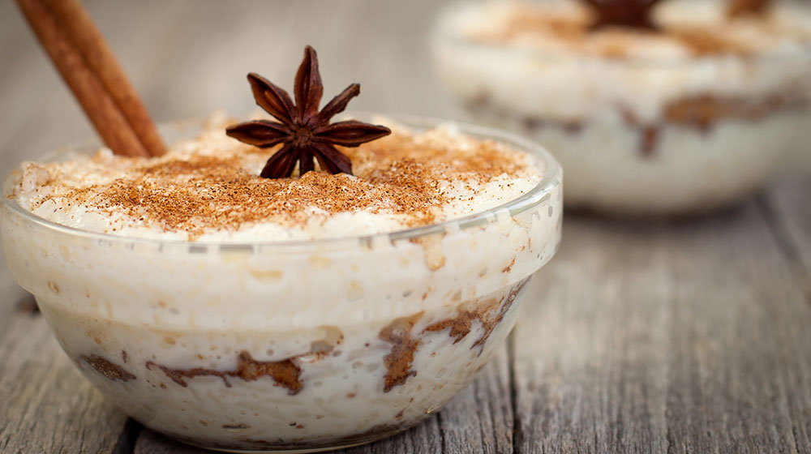

Arroz con Leche
06 de noviembre del 2018 Calienta el agua con la canela y cuando suelte el hervor, agrega el arroz; cocina durante 15 minutos o hasta que el arroz esté tierno. Vierte la Leche Condensada LA LECHERA®, la Leche Evaporada CARNATION® CLAVEL® y las pasitas; mezcla y continúa la cocción a fuego bajo de 20 a 25 minutos hasta que espese ligeramente. Sirve tibio o frío y espolvorea con canela molida. Si es necesario agrega agua para su cocción. Puedes decorar también con pasas, nueces o almendras. El arroz es un cereal básico en la alimentación de todo el mundo. Proporciona energía al cuerpo, es bueno para la piel, mantiene bajos los niveles de azúcar en la sangre.

Luna45: Me encanta el arroz con leche! yo le agrego clavo de olor

Juan20: Me gusta comerlo frío y agregarle higos